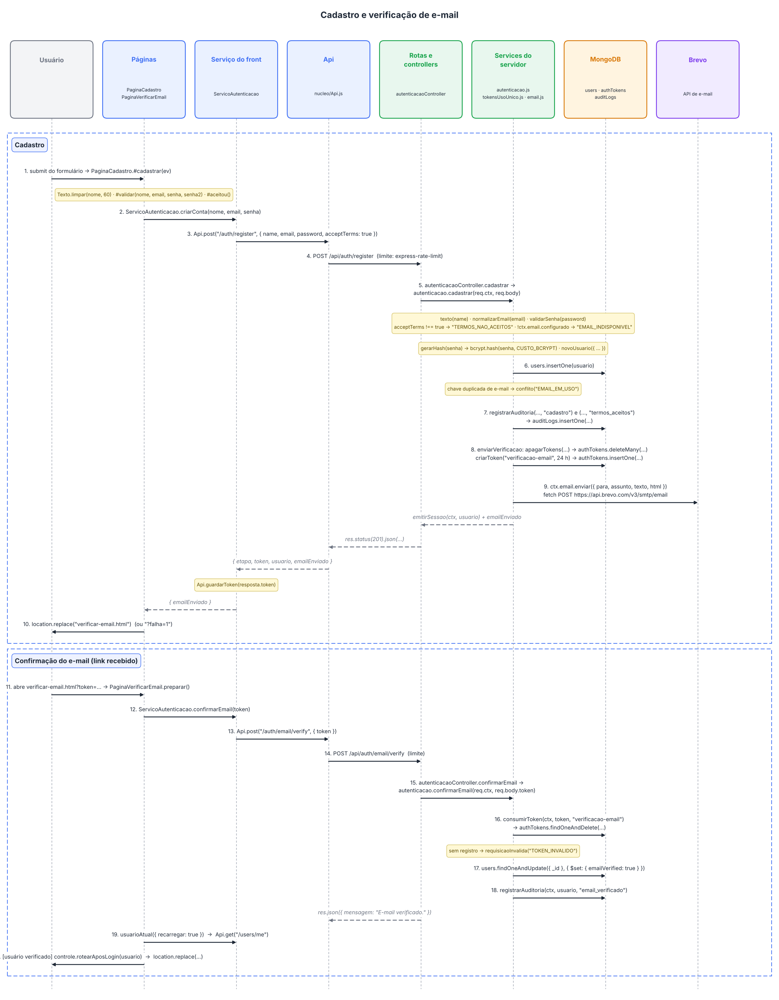
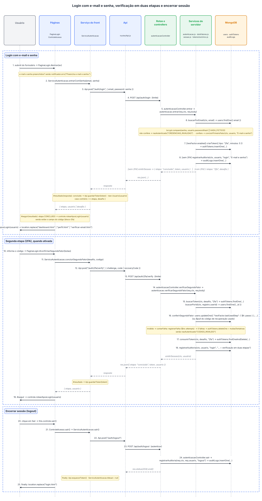
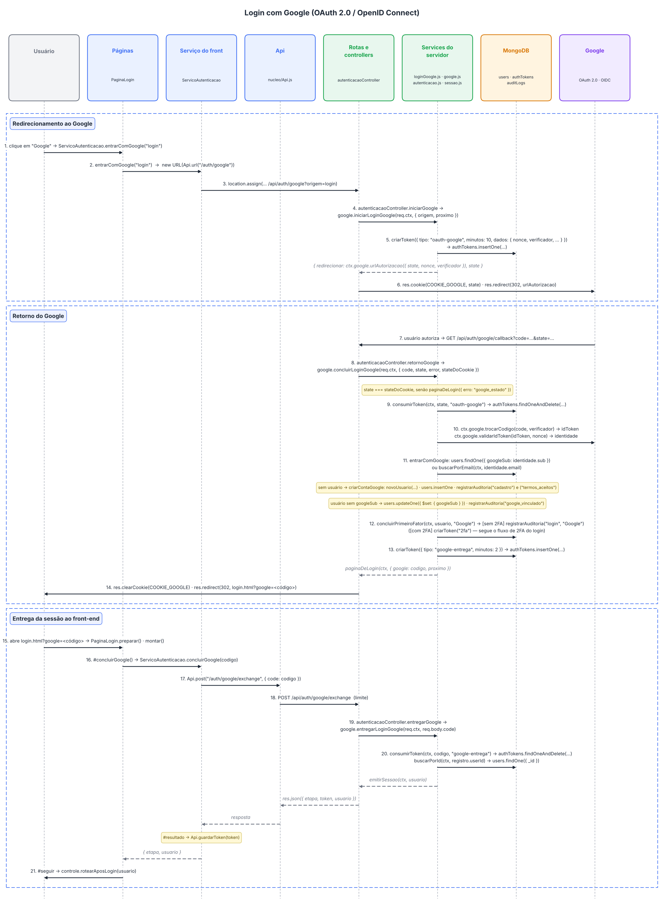
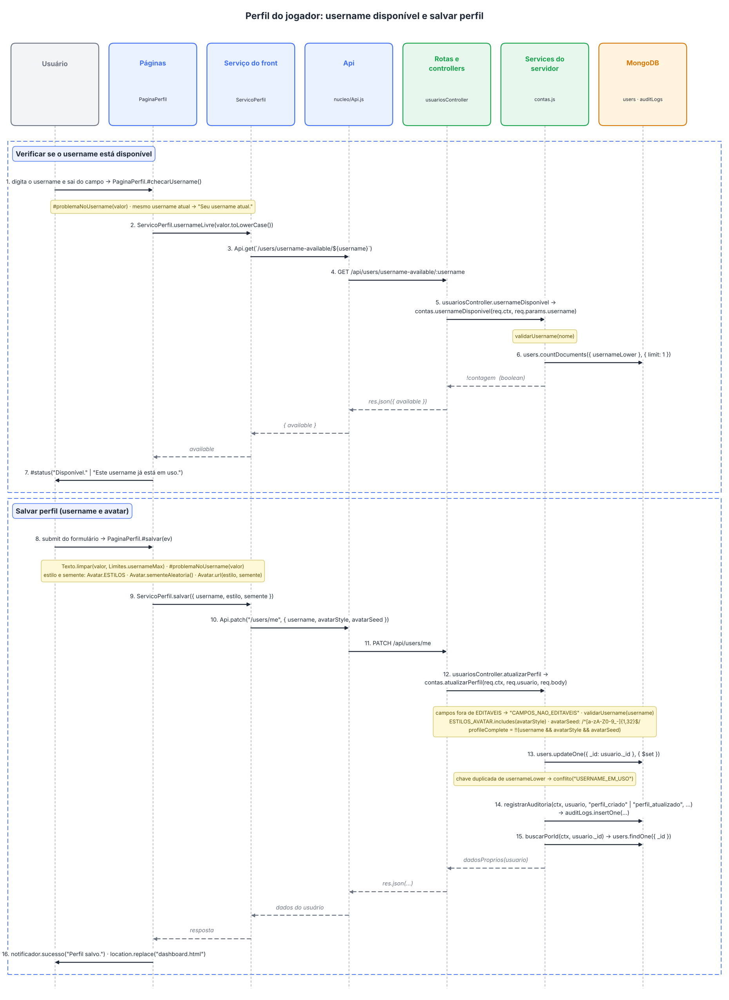
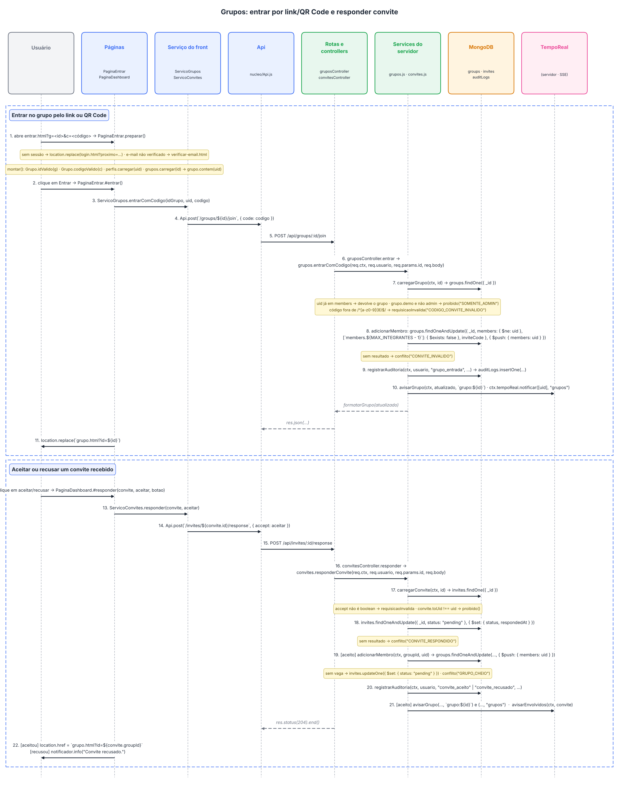
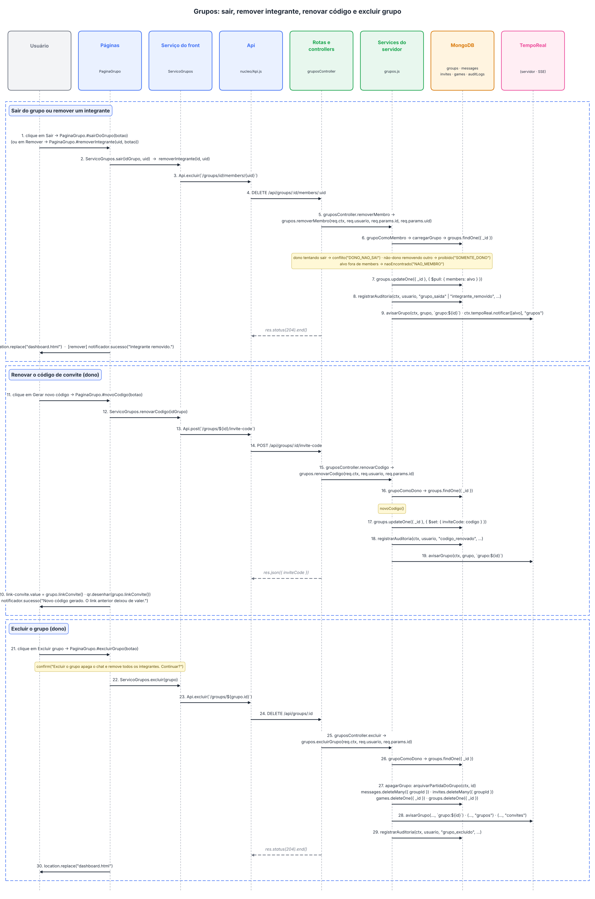
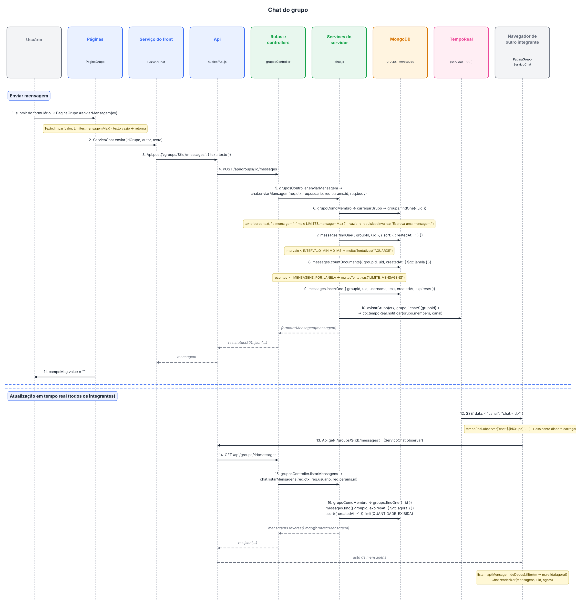
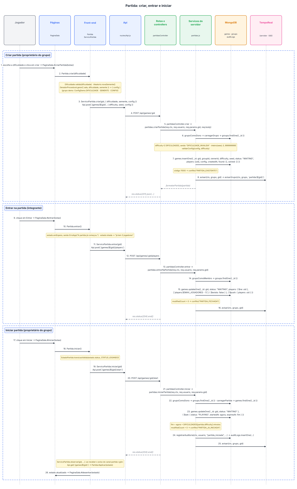

Diagramas e fluxos reais
Nove diagramas montados a partir do código atual, cada um com a explicação. Use "Ampliar" e role para os lados no celular.
1. Arquitetura geral
Onde cada parte roda e como conversa.
flowchart TB
subgraph NAV["Navegador do jogador"]
UI["Páginas e componentes<br/>HTML, CSS, ES Modules"]
WK["Web Worker<br/>Pyodide 0.26.4"]
UI <-- postMessage --> WK
end
EST["Hospedagem estática<br/>(Firebase Hosting no firebase.json)"]
subgraph API["API no Render: Node.js + Express 5"]
MW[Middlewares] --> CT[Controllers] --> SV[Services]
TR["tempoReal.js<br/>conexões em memória"]
SV --> TR
end
DB[("MongoDB Atlas")]
BR[Brevo]
GO[Google OIDC]
FB["Firebase REST<br/>só migração"]
EST -- arquivos --> UI
UI -- "HTTPS + JSON + Bearer" --> MW
TR -- "SSE: canal que mudou" --> UI
SV -- driver mongodb --> DB
SV --> BR
SV --> GO
SV -.-> FB
CDN["CDNs e DiceBear"] -.-> UI
CDN -.-> WK- Quem inicia: o navegador, ao baixar os arquivos estáticos.
- Participantes: o front decide a aparência; a API decide permissões e regras; o banco persiste.
- Dados: JSON por HTTPS; pelo SSE vai apenas o nome do canal.
- Resultado: só a API tem a credencial do banco.
2. Componentes
Quais módulos dependem de quais.
flowchart TB
subgraph Front
M[main.js] --> PG[paginas/Pagina*]
PG --> CP["componentes/<br/>MesaDeJogo, PainelEnigma, PainelChat"]
PG --> SF["servicos/<br/>Servico*, Partida"]
CP --> SF
SF --> MD["modelos/<br/>EstadoPartida, Enigma, Pontuacao"]
SF --> API2[nucleo/Api.js]
SF --> TRC[nucleo/TempoReal.js]
SF --> GE[nucleo/GeradorProcedural.js]
SF --> EX[nucleo/ExecutorPython.js] --> PW[nucleo/PyodideWorker.js]
end
subgraph Back["backend/src"]
SRV[server.js] --> APP[app.js]
APP --> MWB["middleware/"]
APP --> RT["routes/"] --> CTR["controllers/"] --> SVC["services/"]
SVC --> UT["utils/"]
SRV --> CFG["config/ambiente.js, banco.js"]
end
API2 -- REST --> APP
TRC -- "GET /api/events" --> APP
SVC --> M2[("MongoDB")]server.jsmonta o objetoctx(banco, e-mail, Google, tempo real) e o injeta emcriarApp(ctx). Os testes trocam essas dependências.- No front, a direção é página → componente/serviço → núcleo.
3. Sequência de autenticação
Login com senha, 2FA e requisição protegida.
sequenceDiagram
autonumber
actor U as Usuário
participant P as PaginaLogin
participant S as ServicoAutenticacao / Api
participant M as limite + routes/autenticacao
participant A as services/autenticacao.js
participant DB as MongoDB
U->>P: submit (e-mail, senha)
P->>S: entrarComSenha()
S->>M: POST /api/auth/login
M->>A: controller.entrar → entrar(ctx, body)
A->>DB: users.findOne({email})
A->>A: bcrypt.compare(senha, passwordHash)
alt senha errada
A-->>S: 401 CREDENCIAIS_INVALIDAS
else 2FA ativo
A->>DB: authTokens.insertOne(hash do desafio, 5 min)
A-->>S: {etapa:"2fa", desafio}
U->>P: código de 6 dígitos
S->>A: POST /api/auth/2fa/verify
A->>DB: lastUsedStep e consumo do desafio
A-->>S: {etapa:"concluido", token, usuario}
else sem 2FA
A->>DB: auditLogs.insertOne("login")
A-->>S: {etapa:"concluido", token, usuario}
end
S->>S: localStorage["escape-sessao"] = token
S->>M: GET /api/groups (Authorization: Bearer)
M->>M: autenticar: jwt.verify + users.findOne + sessionVersion
M-->>S: 200 ou 401 TOKEN_INVALIDO- Início: o
submitdo formulário. Entra: e-mail e senha. Sai: JWT assinado com o id e a versão da sessão. - O token completo só existe depois de todos os fatores.
4. Criação e entrada em grupos
Do botão ao vetor members.
sequenceDiagram
autonumber
actor D as Dono
actor C as Convidado
participant F as Páginas + ServicoGrupos
participant R as middlewares "jogador"
participant G as services/grupos.js
participant DB as MongoDB
participant T as tempoReal.js
D->>F: nome do grupo
F->>R: POST /api/groups {name}
R->>G: criarGrupo()
G->>DB: users.updateOne (reserva de 30 s)
G->>DB: groups.insertOne({ownerId, members:[dono], inviteCode})
G->>DB: auditLogs "grupo_criado"
G->>T: notificar([dono], "grupos")
G-->>F: 201 grupo
D-->>C: link ou QR Code (entrar.html)
C->>F: PaginaEntrar: confirmar
F->>R: POST /api/groups/:id/join {code}
R->>G: entrarComCodigo()
G->>DB: findOneAndUpdate(vaga livre e código atual, $push)
alt cheio ou código trocado
G-->>F: 409 CONVITE_INVALIDO
else entrou
G->>T: notificar(membros, "grupo:id")
G-->>F: 200 grupo
T-->>F: SSE para o dono, que faz novo GET
end- Quem decide a vaga: o filtro do
findOneAndUpdate, não a tela. - O convite por username segue outro caminho (
invites), mostrado na galeria abaixo.
5. Sequência do chat
Três requisições, um aviso.
sequenceDiagram
autonumber
actor A as Jogadora A
participant FA as PainelChat / ServicoChat
participant API as routes/grupos + controller
participant CH as services/chat.js
participant DB as MongoDB
participant T as tempoReal.js
participant FB as Navegador de B (TempoReal.js)
FB->>T: GET /api/events (conexão fica aberta)
A->>FA: submit do formulário
FA->>API: POST /api/groups/:id/messages {text}
API->>CH: enviarMensagem()
CH->>DB: grupoComoMembro: groups.findOne
CH->>DB: última mensagem e contagem (limites)
CH->>DB: messages.insertOne({..., expiresAt +24h})
CH->>T: avisarGrupo(members, "chat:id")
T-->>FB: data: {"canal":"chat:id"}
CH-->>FA: 201 mensagem
FB->>API: GET /api/groups/:id/messages
API->>CH: listarMensagens() (confere membro de novo)
CH->>DB: find + sort + limit 60
CH-->>FB: lista
FB->>FB: Chat.renderizar com textContent- O aviso não leva o texto; quem foi removido do grupo não consegue buscá-lo.
6. Execução de um desafio Python
Duas threads e um registro no servidor.
sequenceDiagram
autonumber
actor J as Jogador
participant PE as PainelEnigma
participant PT as Partida.validar
participant GE as GerenciadorEnigmas
participant EX as ExecutorPython
participant W as PyodideWorker (outra thread)
participant API as partidas.registrarEnigma
J->>PE: "Testar e abrir" (ou Ctrl+Enter)
PE->>PT: validar(chave, código, códigoDigitado)
PT->>GE: validar(enigma, ...)
GE->>EX: executar({codigo, nomeFuncao, testes, entrada})
EX->>W: postMessage({id, ...})
Note over EX: setTimeout 6 s
W->>W: HARNESS: parse, exec, testes
alt travou
EX->>W: terminate()
EX-->>GE: {fase:"tempo_esgotado"}
else respondeu
W-->>EX: {tipo:"resultado", id, resultado}
EX-->>GE: resultado
end
GE->>GE: confere o código do mecanismo
GE-->>PT: TentativaEnigma
alt resolvida
PT->>API: POST /api/games/:gid/puzzles/:chave {hints, attempts}
API-->>PT: 204 ou 409
else falhou
PT->>PT: tentativas++ (só na memória)
end
PT-->>PE: mostra console e feedback- O código Python nunca vai para a API. O servidor recebe só a afirmação de que foi resolvido.
7. Sincronização do jogo
Um age, todos recarregam.
sequenceDiagram
autonumber
participant A as Navegador A
participant B as Navegador B
participant API as services/partidas.js
participant DB as MongoDB
participant T as tempoReal.js
A->>API: GET /api/time (deslocamento do relógio)
A->>API: GET /api/games/:gid
B->>API: GET /api/games/:gid
par duas ações ao mesmo tempo
A->>API: POST puzzles/p1
and
B->>API: POST puzzles/p1
end
API->>DB: updateOne({solved.p1 não existe, ...})
DB-->>API: A: modifiedCount 1
DB-->>API: B: modifiedCount 0
API-->>A: 204
API-->>B: 409 ENIGMA_JA_RESOLVIDO
API->>T: notificar(membros, "partida:gid")
T-->>A: canal mudou
T-->>B: canal mudou
A->>API: GET /api/games/:gid
B->>API: GET /api/games/:gid
A->>A: Partida.#aplicar → #desenhar
B->>B: Partida.#aplicar → #desenhar- O front trata
ENIGMA_JA_RESOLVIDOcomo sucesso (ServicoPartida.registrarResolucao).
8. Finalização e persistência
Do enigma final ao gráfico.
sequenceDiagram
autonumber
participant J as Jogador
participant C as partidasController
participant P as services/partidas.js
participant Q as pontuacao.js
participant H as historico.js
participant DB as MongoDB
J->>C: POST puzzles/pf {hints, attempts, score}
C->>P: registrarEnigma()
P->>DB: games.findOne
P->>Q: calcularPontuacao(dados do servidor + usos)
P->>DB: updateOne(pistas e demais enigmas existem, prazo) → COMPLETED
P->>H: arquivarPartidaDoGrupo()
H->>DB: gameHistory.updateOne(upsert, $setOnInsert)
P->>DB: auditLogs "partida_concluida"
P-->>J: 204 e aviso SSE
J->>P: GET /api/games/:gid → PainelResultado
J->>P: GET /api/users/me/stats (dashboard)
P->>DB: gameHistory.find({players: uid}) + games ativosscoredo corpo é só conferido quanto ao formato; o valor gravado é o calculado no servidor.- Desistência e expiração seguem
encerrarPartida, que também arquiva, comscore: null.
9. Segurança e autorização
As barreiras, em ordem, e o buraco.
flowchart TD
REQ[Requisição] --> O{Origem permitida?}
O -- não --> X1[403]
O --> RL{Dentro do limite?}
RL -- não --> X2[429]
RL --> T{"JWT válido e sessão atual?"}
T -- não --> X3[401]
T --> E{"E-mail e perfil?"}
E -- não --> X4[403]
E --> PAP{"Rota de admin?"}
PAP -- "sim e não é admin" --> X5[403]
PAP --> GR{"Membro / dono do grupo?"}
GR -- não --> X6[403]
GR --> VAL{"Dados válidos?"}
VAL -- não --> X7[400]
VAL --> EST{"Estado permite? (filtro atômico)"}
EST -- não --> X8[409]
EST --> GRAVA[(Grava)]
GRAVA -. "NÃO verificado:<br/>se o Python foi resolvido" .-> GAP["lacuna conhecida"]
style GAP stroke-dasharray: 5 5CORSsó limita navegadores; um script direto passa dessa primeira barreira e para na autenticação.
Diagramas detalhados da equipe
Sequências com nomes de métodos, já alinhadas à versão Express + MongoDB. Toque em "Ampliar".
Cadastro e verificação de e-mail

Login, 2FA e logout

Login com Google

Perfil

Grupos: entrar e responder convite

Grupos: sair, remover, renovar código e excluir

Chat (tela do grupo)

Partida: criar, entrar e iniciar

O diagrama de chat usa PaginaGrupo; dentro da sala, o mesmo caminho começa em PainelChat.
O que corrigir nos diagramas do repositório
A pasta diagramas/ do GitHub ainda descreve a versão antiga.
Arquivo em diagramas/ | Problema verificado | Correção |
|---|---|---|
bpmn - autent.png | raia Firebase autenticando | trocar por API própria + MongoDB e incluir verificação de e-mail |
bpmn - chat.png | grava no Firebase e "registra auditoria" no envio | messages no MongoDB; não há auditoria de mensagem |
bpmn - partida.png | Firebase; mostra o servidor registrando tentativa errada e a aplicação validando o código | validação no navegador; tentativas não vão ao servidor quando falham |
bpmn - grupos.png | omite a entrada por link/QR Code | acrescentar o fluxo join |
diagrama de classe - parte 3 | ServicoChat com Firestore, deSnapshot e contador em groups/{gid}/rate | usar Api, tempoReal, Mensagem.deDados; limite no servidor |
| demais diagramas de classe | não foram conferidos classe a classe neste guia | revisar procurando Firebase, Timestamp e Snapshot |